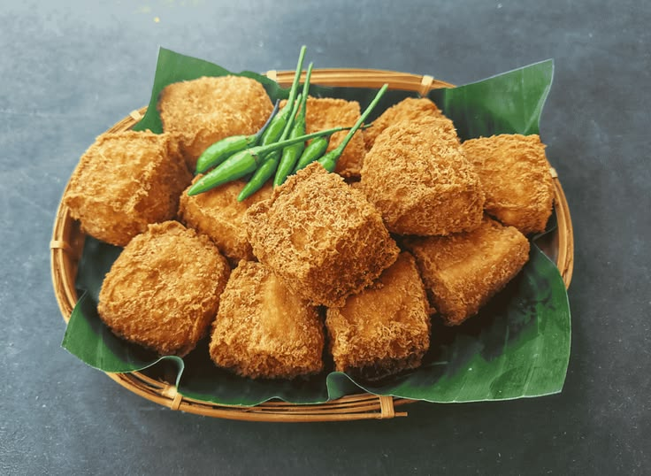
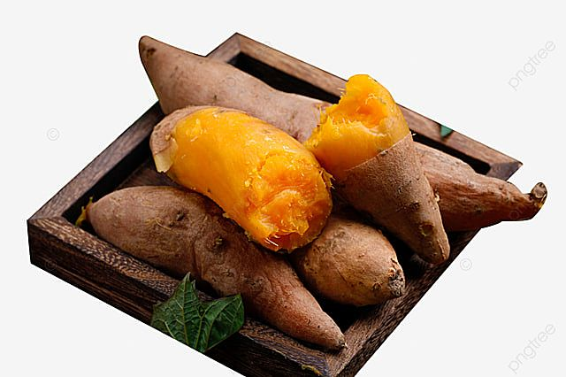
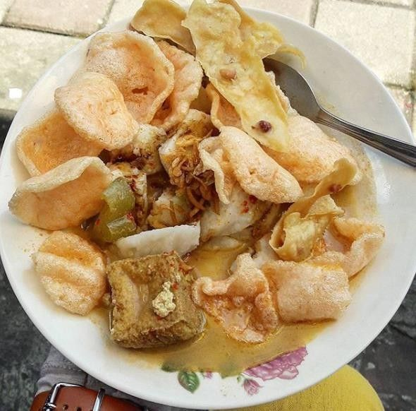
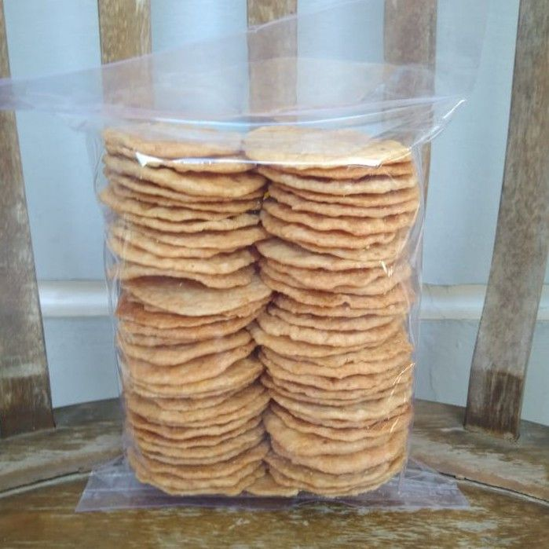
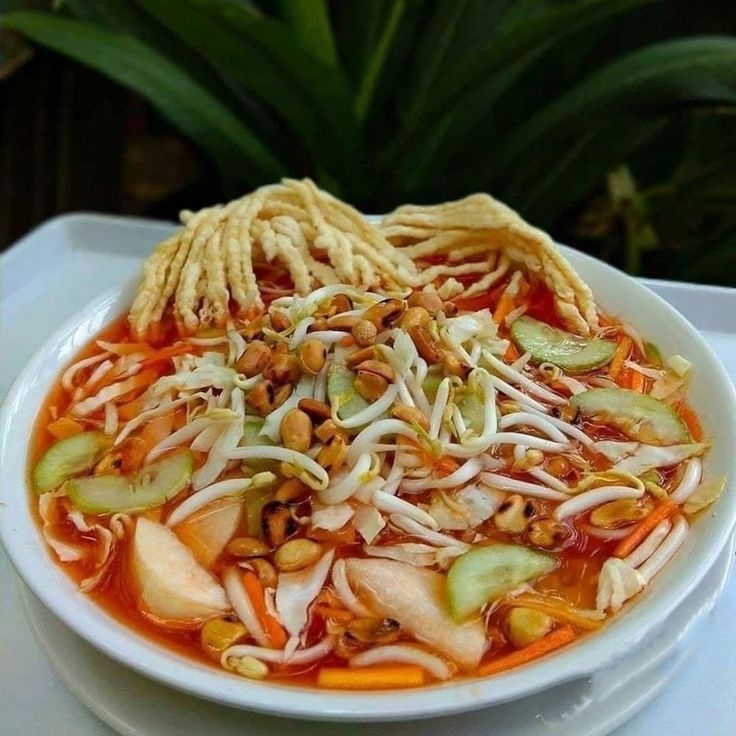

Kuliner Khas Sumedang

Tahu Sumedang
Sejarah: Diperkenalkan oleh Ong Kino, seorang perantau Tionghoa pada awal abad ke-20. Keunikan tahu ini terletak pada penggunaan air tahu yang difermentasi alami, menciptakan tekstur kulit yang renyah setelah digoreng namun tetap lembut dan kenyal di dalam. Wajib disantap panas-panas dengan cabai rawit hijau.

Ubi Cilembu
Fakta: Ubi ini hanya bisa tumbuh dengan karakter manis maksimal di Desa Cilembu, Sumedang. Saat dipanggang, ia mengeluarkan cairan lengket seperti madu. Keunikan tanah vulkanik Sumedang membuat ubi ini menjadi komoditas yang tidak bisa ditiru rasanya di daerah lain.

Soto Bongko
Deskripsi: Makanan tradisional khas Sumedang yang legendaris. Terdiri dari irisan lontong (bongko) yang disiram kuah kari kental berempah dengan isian tahu, tauge, dan taburan bawang goreng. Rasanya sangat gurih dan kaya akan rempah khas nusantara.

Opak Conggeang
Proses: Berasal dari wilayah Conggeang, opak ini dibuat dari ketan pilihan yang ditumbuk dan dibumbui kelapa parut. Keistimewaannya terletak pada teknik pembakaran menggunakan bara api kayu bakar yang memberikan aroma khas yang tidak bisa digantikan oleh oven modern.

Colenak
Filosofi: Singkatan dari "dicocol enak". Tape singkong (peuyeum) yang dibakar lalu disajikan dengan saus kinca yang terbuat dari campuran gula merah dan parutan kelapa. Ini adalah camilan penghangat suasana yang mencerminkan kesederhanaan masyarakat Sunda.

Asinan Sukasari
Deskripsi: Perpaduan segar buah-buahan dan sayuran lokal yang direndam dalam kuah cuka, gula, dan cabai yang seimbang. Sukasari terkenal dengan racikan kuah asinan yang sangat khas, menggabungkan rasa pedas, asam, dan manis yang membangkitkan selera makan.